碎碎念
还有一个多小时就是 2019 Google I/O 大会了，不得不感叹时间过的好快。五月谷歌，六月苹果，年复一年，技术不长反退，人也懒散起来。只好整理心情水水博客找点事情做。
两年前看好友 kiri 就在搞 V2 的轮子，狗杰哥 这几天也突然安利我下载个客户端试试看，800 米体测过后点了盒马犒劳自己，饱餐后准备和他一起折腾迷之客户端。V2RayX 是 macOS 上面的 GUI。习惯性地从 release 下载，其实读 readme 是可以从 brew 下载的，直到我写这篇博客的时候才看到，蠢哭了。
相比于 ss 有何优点？
我之前用的只是 ssX-NG 客户端，那么为什么换成 V2RayX 呢？
Proxy auto-config Mode，简称 pac 模式，大家开 ss 的时候应该经常用到，在浏览器键入 URL 之后会跑 JS 脚本来判断走代理还是直连，可是实际生活中还是会出现应用程序不能工作或者网页无法加载的问题。网络大师杰哥认为：
ss + pac 就是程序读 pac，自己执行 pac 判断请求路由到本地代理还是直连。相比之下，v2ray + global 则是程序无脑请求本地代理，代理程序来判断路由方向。在我们日常支持 pac 的程序很少的情况下，显然后者兼容性更好。
V2Ray + Global 带来了更好的兼容性，可以真全局，也可以按照规则来路由，这取决于自己选择的 routing rule。所以这次我来试试告别 ssX-NG，拥抱 V2RayX。
为了方便理解，我做了两张流程图如下：


开箱配置
1.导入模版/配置规则
按照安装提示，需要下载一些工具插件，指纹/密码授权后无脑下载就行。这里个人有一点踩坑，菜单里面的authorize v2ray sys_conf 也要手动点击授权（其实第一次打开就默认让输入密码了，我好像手滑按了跳过，其实并不需要手动的）。之后进入菜单栏 configure，import 进一些杰哥给我的配置文件如下：
1 | { |
就这样，我倒入进来一个 ss 模版和三条路由规则：all_to_main 全走代理，all_to_direct 全直连，whiltelist 有点复杂。文档：https://www.v2ray.com/chapter_02/03_routing.html 。
-
常见国内域名直连，提高判断效率
-
常用翻墙域名走代理（含被DNS污染的）
-
进行DNS解析（IPOnDemand），国内 IP 直连，CDN 在这里解析到国内节点
-
final: 其余全走代理
2.填写 server 修改端口 勾选 Proxy
**之后 菜单栏 -> configure -> advanced -> outbounds 修改 ss 配置、保存 -> view current config.json：http://127.0.0.1:8070/config.json ，确认无误后 load core。**这时候我发现没有跑起来，可能的原因是 local socks5 的 1080 端口被占用了，可以自己随便换一个大端口试试看。
同时本机电脑网络配置 Proxies 选项中，可以检查是否已经自动☑️勾选上 Web Proxy，Secure Web Proxy，SOSCKS Proxy。以及检查右侧的 proxy server 是否被先前授权过的程序自动填入了。这一点是在通过 Proxies 检查 sys_conf 授权的正确与否。
再次 load core。可惜 netstat -na | grep 19198 端口也在监听了，为什么还是没有跑起来呢？
3.编译 geosite.dat 覆盖原文件
因为改了上面这些还没完，上文 JSON 中 "geosite:geolocation-!cn" 包含了常见的非国内站点的域名。（https://github.com/v2ray/domain-list-community ，这个仓库在维护所有预定义域名列表。）最新 V2Ray 的才有 geolocation-!cn 这个写法，而我们在用的 V2RayX 客户端 还没支持。所以要先修改安装包中名字为geosite.dat 的文件。编译全新的 geosite.dat 文件，把原来旧文件覆盖掉。我直接把杰哥的拿来用了。
1 | cd /Applications/V2RayX.app/Contents/Resources/ |
reload core，理论上应该可以正常使用啦w。
4.读取 log 与 debug
Console APP 里面有结果。
进程起来了。
1 | /A/V/C/Resources$ ps -ef | grep v2ray |
Curl 谷歌也有反应。
1 | /A/V/C/Resources$ export http_proxy=http://127.0.0.1:10011 |
那为什么我们查看 log 却是空空如也呢？
1 | ~$ cat ../../var/folders/8x/dir/T/cenmrev.v2rayx.log/error.log |
直到很久之后才发现，客户端默认的 Log Level 是 None，手动勾选 debug 模式就可以正常看到 log 了。这块好坑啊！！
另补充，担心配置语法写错的话，V2Ray 有个测试功能，我们保存 config.json 并且进行测试，命令如下：
1 | ~/w/hexo$ cd /Applications/V2RayX.app/Contents/Resources |
说明配置正确。
CC BY-NC-SA 4.0.